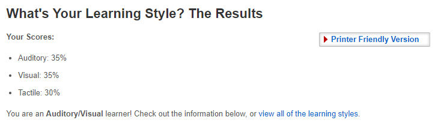
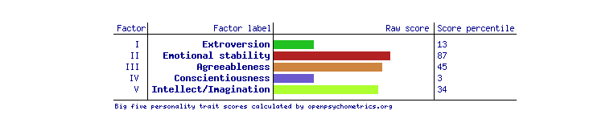
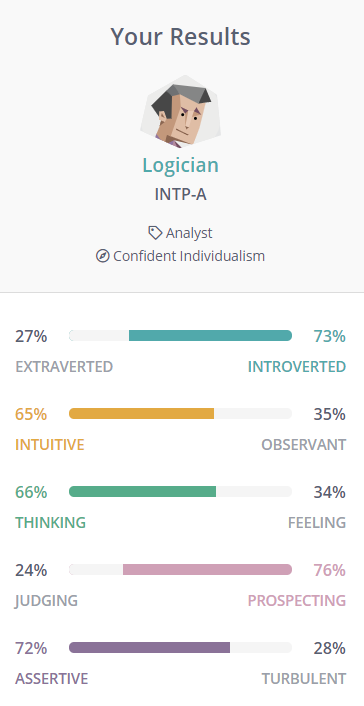

Personal Information
Hi! My name is Joel and I'm a first year student here at RMIT currently doing my Bachelor of Information of Technology. My student number is S3896614 and my email is S3896614@student.rmit.edu.au. I attended Caulfield South Primary School where I finished my primary school education and then progressed to Mckinnon Secondary College where I finished my high school education. I am half English from my mothers side and one quarter Hungarian, one quarter Serbian from my fathers side however, I was born right here in Melbourne. One fact some may not know about me is that I have two cats named Vincent and Jules after the characters from Quentin Tarantino’s ‘Pulp Fiction’.
Interest in IT
My interest in IT began early in highschool when I got my first computer. I began by mainly just playing videogames with my friends but quickly began to discover new software such as Adobe Premiere Pro among others. Up to this point my IT knowledge was gained pretty much exclusively through Youtube tutorials and online forums. In year eleven and twelve I picked up IT based subjects including programming and data analytics where I first learned the basics of coding through Visual Studio as well as multiple database creation softwares including Microsoft Access and Microsoft Excel to name a couple.
Why RMIT?
I chose to come to RMIT because I knew I wanted to specialise in a particular field of IT but I was and still am unsure of what to choose. The reputation of RMIT’s IT department was very appealing to me and the wide range of choices from artificial intelligence to software development seemed to fit my needs. My uncertainty of which field of IT to choose led me to this course and I hope I can expand my knowledge in the future.
What I expect to learn
While studying during this course I expect to build the foundations I need for my future technology based endeavours. I also am very interested in learning new coding languages like Python and SQL.
Ideal Job
The job I have chosen is a Senior Data and Analytics Consultant. On Seek I found a listing for someone with experience in data analytics with a yearly salary of $120,000 - $149,999.
What makes it appealing
I have always had a great interest in the creation and management of databases and based on the description of the job this is exactly what this company needs. This company also specifies that they are a ‘growing, supportive and professional team’ which is exactly what I would want when entering a new work environment.
Skills and qualifications
Skills and qualifications I currently have
Currently I have prior experience with database systems such as Microsoft Excel, Microsoft Access and Google Sheets. I am also currently learning SQL and starting my Bachelor of IT which are perfect fits for this job.
How will I obtain these qualifications
By completing my Bachelor of IT I would have already gained the majority of the qualifications I need for this job however, specialised software such as Power BI I would have to learn for myself. The five years of experience would obviously be gained just by working in this field of technology.
Learning Style Test
My learning style shows that I am a Auditory/Visual learner however all three categories are extremely close. This was very interesting as I've never really had a set way when trying to learn new things whether it be writing it down physically completing a task or listening to others I’ve never really gravitated towards one.
Big 5 Personality Test
The results of the Big 5 Personality Test show that I am introverted, have high emotional stability, somewhat agreeable, very impulsive/disorganized and somewhat conventional.
16 Personalities
The 16 Personalities Test shows that I have a Logician personality. Looking at the data we see that I am introverted and prefer solitary activities. I am mostly intuitive meaning that I am very imaginative and curious. I prefer to focus on objectivity and rationality rather than emotions. I am good at improvising and spotting opportunities when they arise as well as overall be more relaxed. I'm mostly assertive meaning that I am more resistant to stress and don't push myself too hard when it comes to achieving goals.
What these results mean to me
When viewing these results there are no big surprises. I think that they are all very accurate and reflect who I am as a person perfectly. I do see myself as an introvert and most of the time like to work by myself, I am more relaxed than others when it comes to more stressful situations, I do rely on my own logic rather than my emotions, I am a very opportunistic person who is disorganised a lot of the time and I am a very flexible when it comes to methods of learning.
How does this influence my behaviour in a team
As an introverted person I usually like to sit in the back lines and let someone step up as the leader of the group however, I feel this will not make me any less important to the group. When it comes to doing group work/assignmentsI feel as though I can fit into any group without any issues on how my efficiency will be affected.
How to take this into account when forming a team
When forming a team I need to take into account what personalities other members have as a more introverted person myself. I work well when others lead and I know what I need to do. This helps me become a more efficient worker overall therefore benefitting the group more.
Project Overview
As I said in my personal information I work a lot with Adobe Premiere Pro and before that I had worked with other video editing software such as Sony Vegas. One issue I face is finding sound bites/effects that would suit the video. Whether it be a more serious video for business purposes or a more fun video that you made for your friends these all require sound design. My idea is that instead of converting files to mp3 from youtube or other inefficient methods all these sound files could be found on a singular website. It would include categories on what video format they would fit (business, fun, etc) as well as filters to find more specific sound effects.
Motivation
As I said previously from personal experience I find it hard to aquire large amounts of sound files without having to go through third party sites such as mp3 converters. I also know that many people are put off by the thought of editing a video thoroughly because of the large amount of time you have to commit. Not only would this website reduce the time it takes to find and implement sound design into videos but it also would help even the most experienced video editors find specific sounds that they need.
Description
The main purpose of my idea is to allow anyone to upload sound files to a singular website and let anyone download those sound files. To help users find the sounds they are looking for the website must be a simplistic design with minimal text to allow for as much room for the titles of the sound clips to stand out. Users will be able to log in with their email which would allow them to upload files, users will not have to log in to download these files. This is to ensure that the process of downloading is as simple as possible for the user and broadens the accessibility of the website. When uploading files users will also be able to choose what category they think the file fits into. For example if I uploaded a sound of someone laughing I wouldn’t put that in the ‘business’ category, I would instead place it in the ‘fun’ category. There would of course be many filters you could choose from such as animal, talking, meme etc. A search function would be implemented as well if the user does not want to use the filter feature. For example if a user wanted a sound of a duck quacking they would search ‘duck’. A feature that I also may want to add is the ability for users to post a description of a sound they want but either cannot find or doesn’t exist. In the case that they cannot find the sound other users would be able to post a sound of the original users description. If the sound doesn’t exist yet users may go beyond to record and upload their own sound and then post that for the original user. If either of these requests are fulfilled then the original user could mark the post as answered/complete. You would have to be logged in to complete these tasks. Logged in users would also be able to save sounds to speed up this process in case that the same sound is requested regularly. Other websites similar to this are much more professional and don’t allow for sounds to be posted by anyone. This also means they don’t include sounds for less professional videos such as skit videos or gaming videos.
Tools and Technologies
For my idea I would need to use any website development software or if I wanted it not to be a website but a full fledged program I may use Visual Studio. As I’ve had prior experience with Visual Studio in highschool this would be the easiest software creation tool for me. The coding of this program/website may include some open source code. I have a decently powerful computer at home so this can all be completed on hardware I already own.
Tools and Technologies
I have prior knowledge in designing apps, programs and websites that I have done in highschool. However, I have no prior knowledge of the actual creation of websites (unless you include google sites) so I would have to develop the skills required. If it's software however I already have knowledge in Visual Studio. If however, I wanted to code in a different language such as Python (which I am learning this year) then I would also need to have more experience in that field.
Outcome
If this idea succeeds it would mean that anyone could access an endless amount of sounds for video creation. Whether this be for a novice video creator, expert video creator, business meetings, school projects, fun videos just for friends or family and just anyone creating videos. This would be very impactful towards the less professional creators who want to use sounds that are either stuck behind a paywall or just cannot find the sound they are looking for.